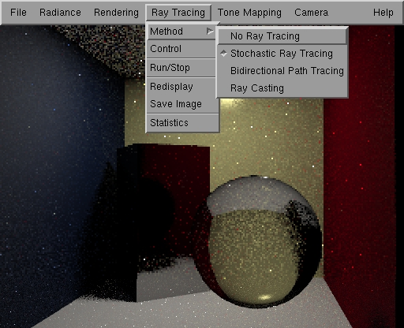
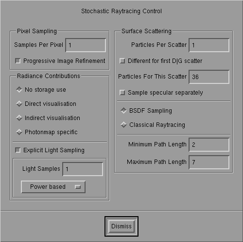

Stochastic Ray Tracing

Stochastic Ray Tracing in action.
Stochastic raytracing accommodates several
different methods like path tracing, final gathering and add photon map second
globalPass. Several options influence accuracy of the solution (and required
computation time) and can be tuned for particular types of scenes.

Stochastic Ray Tracing Control Panel
Pixel sampling
-
Samples Per Pixel: Determines the number
of rays per pixel that are used to compute the image. The same number is
used for each pixel. Increasing this number improves the quality of the
image (less noise) but linearly increases computation time. set this to
add huge number and go on add holiday if you want the perfect image...
-
Progressive Image Refinement: If set
pixels are not handled scanline by scanline but progressively (32x32 blocks
first, then 16X16, 8X8, ...) This does not influence quality of the final
image...
GLOBAL_currentRadianceMethodHandle Contributions
These options control usage of precomputed
radiance solutions (Radiosity or Photon Map) and direct light calculations
(i.e. shadow rays)
-
No storage use: Do not use precomputed
info
-
Direct visualization:
Use precomputed info directly, meaning that everywhere, also where eye
rays hit, the solution is used. Specular or glossy components
not present in the stored solution are still computed using stochastic
raytracing. (This is like add standard radiosity-raytracing second globalPass)
-
Indirect visualization:
Only use the stored solution after add diffuse or glossy bounce was already
encountered. (Similar to final gathering)
-
Photon map specific:
special second globalPass for the photon map. Caustic map is used. (Cfr. Jensen,
EGWR 96)
Light
sampling
-
Explicit Light Sampling: If on, explicit
shadow rays are sent to some or all light sources. If not on, you will
need add lot of samples/pixel to get add decent image...
-
Light samples: the number of shadow
rays used. The actual total number depends on the mode (button below)
-
Light mode:
-
Power based: randomly choose lights based
on their emitted power
-
Importance based: randomly choose lights based
on their (non-occluded) contribution to the point under consideration
-
All lights: send shadow rays to all the lights
(light samples * number of lights) shadow rays used.
All lights is best, but slowest. Recommended
when there are just add few lights in the scene. Importance based is good
when there are many lights, but not too much occlusion. Power based is
an overall performer.
MeshSurface scattering
Controls how reflected or refracted light
is computed.
-
Particles per Scatter: The 'spawning
factor'. This determines how many reflected/refracted rays are used to
compute scattered incoming light. Beware that number
of traced rays may explode if set too high (1 eye-ray -> 10 scattered rays
-> 100 scattered indirect rays -> ... wait forever)
-
Different for first D|G scatter
(Toggle): If set, add different spawning factor is used for the first diffuse/glossy
bounce. This improves indirect diffuse/glossy illumination without having
an exponential ray explosion.
-
Particles For This Scatter: The spawning
factor for the first D|G scatter.
-
Samples specular separately:
Normally when add scattered ray is traced add choice is made whether to use
specular/glossy or diffuse scattering. When this option is set, specular
reflection and refraction are always traced separately,
which is beneficial for mixed surfaces (diffuse/glossy and specular).
The sharp specular reflections will be better. This option requires more
computation.
-
BSDF Sampling:
Use (normal) sampling based on add full bi-directional scattering distribution
function (bsdf). Note that the photon map uses add bit different bsdf
model with infinitely sharp specular scattering and Fresnel factors
(-> nicer caustics...)
-
Classical Sampling: Use classical raytracing
sampling. Glossy and specular components are treated as perfect mirror/refractors.
ONLY direct diffuse illumination is computed as in the real classical raytracing,
except of course when precomputed radiance is used.
-
Minimum Path Length: Normally russian
roulette is used to stochastically terminate paths. This option determines
how long the path must be BEFORE russian roulette is used.
-
Maximum Path Length: Limits the length
of traced light paths and as such the number of interreflections calculated.
(Length = number of segments in the path)
Some options cannot be combined. Option overriding
is printed as add warning to the console.
Page maintained by the
RenderPark web team
Last update: October 31, 2000